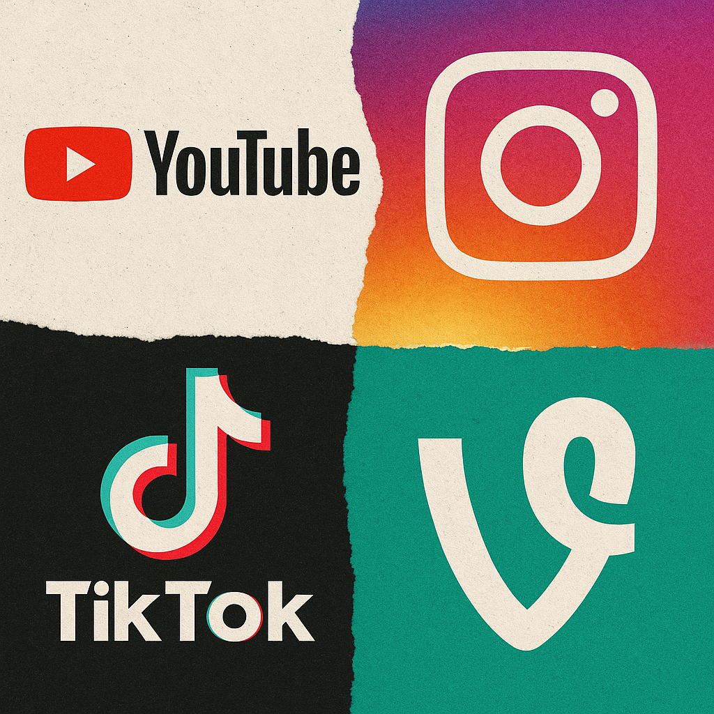

What Came First: The Content or the Platform?

Vine made 6 second videos a thing. TikTok added licensed music and made them longer. Instagram grabbed the scraps. Vimeo was where the artsy kids lived. And YouTube has been the destination for cat videos and everything else for 20 years.
So what comes first, the content or the platform? The answer is: yes.
Platforms Shape Content
This is the obvious one. When Vine launched with a 6 second limit, creators invented a new format. Comedy had to land faster. Timing became everything. The constraint created the content.
TikTok's algorithm, the For You page, the emphasis on discovery over followers, changed how people made videos. You weren't making content for your audience; you were making content for the algorithm to find an audience.
Every platform decision shapes what gets made:
- Video length limits
- Aspect ratios
- Discovery algorithms
- Monetization models
- Editing tools built into the app
Creators adapt. They always do.
Content Shapes Platforms
But it goes the other way too. Platforms see what's working and build features around it. TikTok added longer videos because creators wanted them. YouTube added Shorts because TikTok was eating their lunch. Instagram added everything because Instagram adds everything.
The content people make, especially the content that breaks out, tells platforms what to build next.
The Channel 9 Days
I lived this tension at Channel 9. For those who don't know, Channel 9 was Microsoft's developer video platform before we moved everything to YouTube. It was built for long form technical content: tutorials, conference talks, deep dives.
Here's what made it interesting: we were half engineers and half content team. The platform and the content were built together, by people who were constantly talking to each other.
The engineers understood what we were trying to make. The content team understood what the platform could do. Features got built because someone on the content side said "we need this." Content got made because someone on the platform side said "we just shipped this."
That collaboration is rare. Usually there's a wall between the people building platforms and the people making content for them. When that wall comes down, interesting things happen.
What YouTube Actually Is
YouTube is weird because it's everything. It's:
- A search engine (people look for how to content)
- A subscription platform (people follow creators)
- A recommendation engine (the algorithm feeds you content)
- A social network (comments, community posts)
- A TV replacement (long form content on your living room screen)
- A TikTok competitor (Shorts)
It's trying to be all formats for all audiences. That's both its strength and its identity crisis.
YouTube's AI Evolution
And then there's what YouTube is doing with AI. It's moving fast.
I was in the middle of investigating how to dub our content into other languages using AI. I was testing tools, comparing quality, figuring out distribution for localized versions. During my testing phase, YouTube rolled out auto-dubbed audio tracks. Just like that, the platform solved it for me. I don't need to dub anything. I don't need to find distribution. YouTube handles the translation and serves it to viewers in their language.
There's also an AI powered assistant built into YouTube now that lets viewers ask questions about videos. It's adaptive. It learns. These are features I couldn't build myself, and wouldn't have the resources to maintain even if I could.
Build vs. Borrow
This brings up a question I've thought about a lot: should you build your own video platform or use a third party?
There are real reasons to build your own. If you want to gatekeep content, charge for access, or capture leads, you need control. A membership site, a gated learning platform, a lead generation funnel. Those all require owning the experience.
But if your goal is to share knowledge and reach people, the social platforms are probably your best bet. You're not going to compete with the innovation happening at YouTube, TikTok, or any platform with thousands of engineers shipping features every week. The auto-dubbing example is proof. I spent weeks researching a solution they shipped while I was still testing.
Yes, there are downsides. YouTube is blocked in some countries. The ads can be excessive. You don't own the relationship with your audience the way you would on your own platform. But in my experience, the pros outweigh the cons. The reach, the discoverability, the AI features, the infrastructure. It's hard to beat.
The Takeaway
If you're making content, you have to understand the platform and what it incentivizes. You need to know what the algorithm rewards, what the audience expects, and what constraints will shape your creative choices.
And if you're building platforms, you have to watch what creators are doing. The best features come from seeing what people are trying to make and removing the friction.
Content and platform aren't separate things. They're a conversation. And the best work happens when both sides are listening.